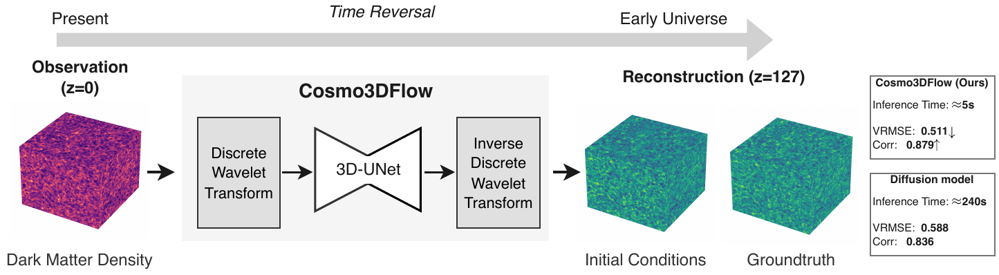
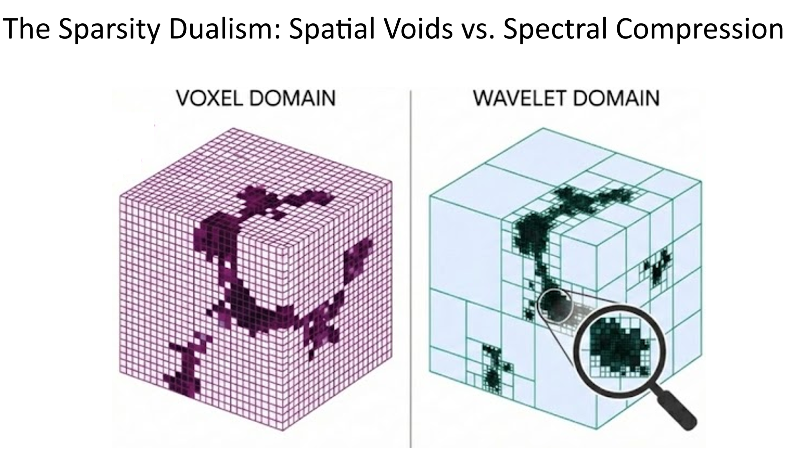
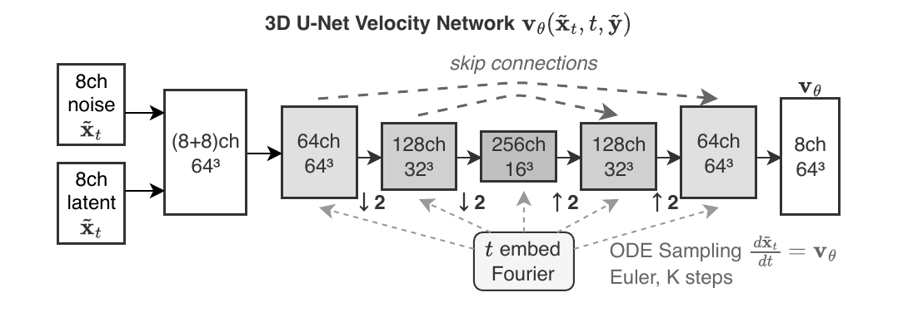
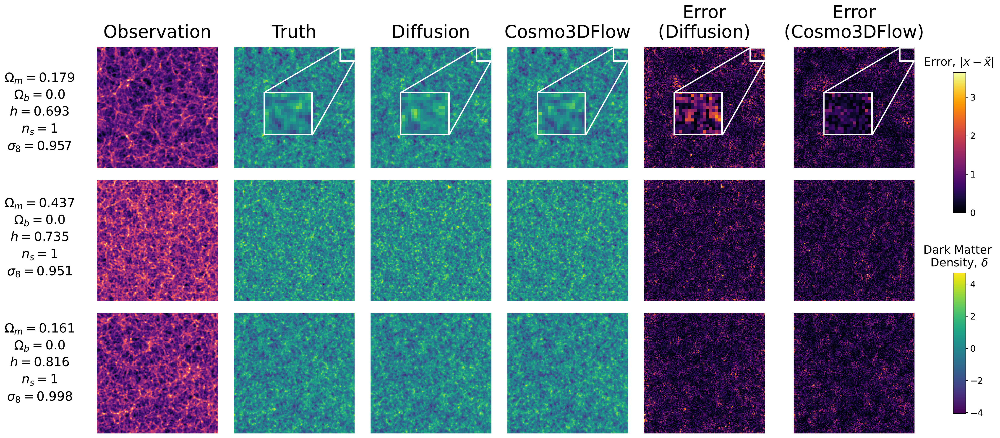
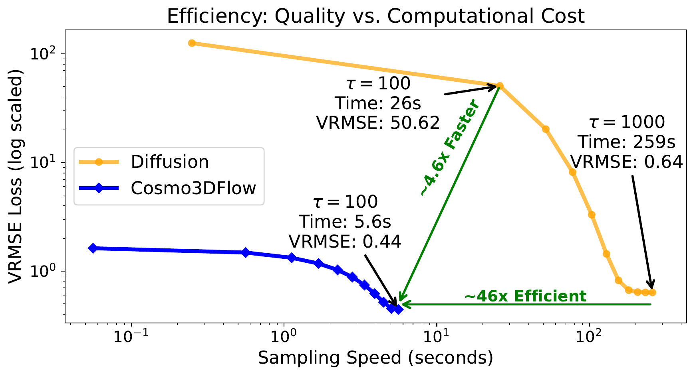
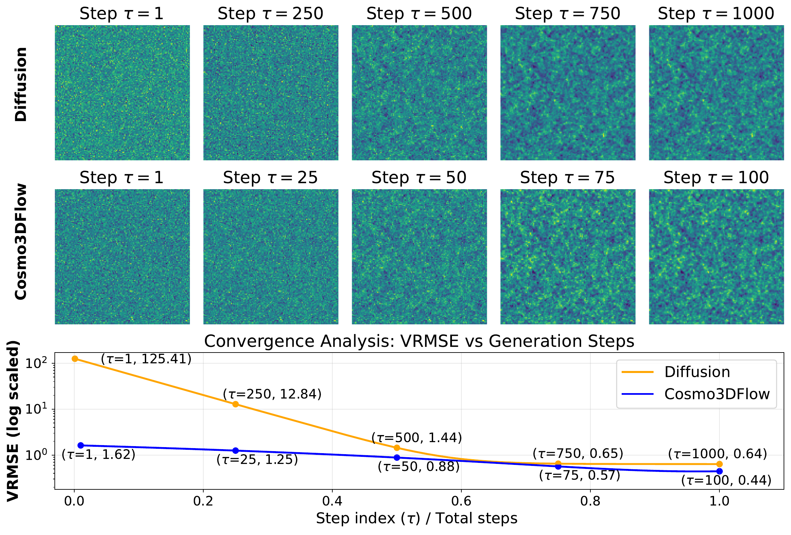
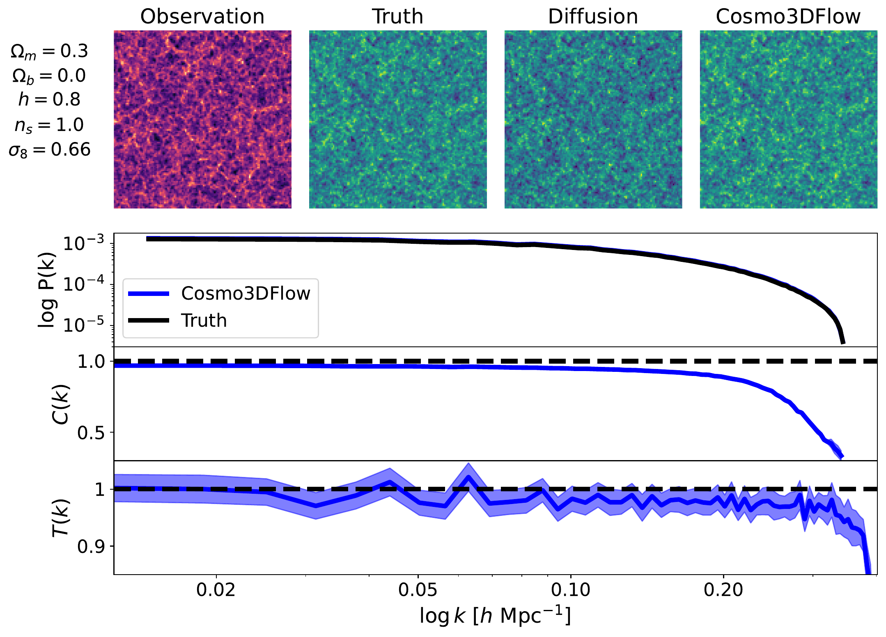

KDD '26 · Jeju, Republic of Korea · August 9–13, 2026
Cosmo3DFlow: Wavelet Flow Matching for
Spatial-to-Spectral Compression in
Reconstructing the Early Universe
Abstract

The Void Problem
Approximately 63.7% of cosmic volume is occupied by near-empty voids holding only 16.2% of dark matter mass, yet voxel-based models allocate equal compute to every cell. A single-level 3D Haar DWT converts this spatial sparsity into spectral sparsity — voids collapse to near-zero high-frequency coefficients while filaments and halos retain fine-grained detail — yielding 8× fewer voxels and ~5× lower per-step compute cost.

Method
Cosmo3DFlow operates entirely in wavelet space: (1) a 3D Haar DWT compresses the input field to 8 coefficient tensors at half spatial resolution (8× compression); (2) a linear flow path interpolates between Gaussian noise and the target in wavelet space; (3) the flow matching loss is minimized jointly with a power spectrum regularizer (λ = 0.01); and (4) at inference, 100 Euler steps in wavelet space followed by an inverse DWT recover the full-resolution density field.
Wavelet-Aware 3D U-Net
The backbone is a 3D U-Net adapted for wavelet inputs. A 16-channel input (8ch wavelet noise + 8ch conditioned observation) passes through encoder–decoder blocks with a fixed 8³ bottleneck. Scale-specific conditioning injects per-level wavelet features at each resolution via 1×1×1 convolutions, and cross-scale skip connections bridge encoder features to non-corresponding decoder levels for multi-scale information flow. Residual blocks follow the BigGAN design with GroupNorm, SiLU, and Gaussian Fourier time embeddings.

Training
Results
Qualitative Reconstruction
Each row shows a 2D slice from a held-out Standard LH test simulation. Cosmo3DFlow recovers sharp cosmic filaments and halo positions that the diffusion baseline blurs, achieving a 21% lower VRMSE at 128³.

Computational Efficiency
Cosmo3DFlow is 4.4× faster per ODE step due to 8× wavelet compression, and converges to lower VRMSE at 100 steps than diffusion reaches at 1,000 — a 50× end-to-end speedup (5.2 seconds vs. 243 seconds) with better quality.

The table below summarizes the head-to-head comparison at 128³. Cosmo3DFlow outperforms the diffusion baseline on every metric while using half the peak memory.
Table 1 — Head-to-head comparison at 128³
| Metric @ 128³ | Cosmo3DFlow | Diffusion |
|---|---|---|
| Sampling time | 5.2 seconds | 243 seconds |
| VRMSE | 0.50 | 0.63 |
| Cross-correlation | 0.88 | 0.82 |
| Power spectrum R² | 0.99 | 0.70 |
| Peak memory | 2.1 GB | 4.0 GB |
| ODE steps | 100 | 1,000 |
Convergence
Cosmo3DFlow reaches its best quality at 100 Euler steps and plateaus; diffusion requires 1,000 steps to approach a higher error floor. The deterministic ODE trajectory in flat wavelet space enables stable large-step integration.

Physics Validation
Three spectral statistics — power spectrum P(k), cross-correlation C(k), and transfer function T(k) — are evaluated vs. wavenumber k on the Standard LH test set at 128³. Cosmo3DFlow achieves near-perfect agreement with ground truth across all scales (P(k) R² = 0.99 vs. 0.70 for diffusion).

Full Results — Ours / Diffusion · bold = best
Results across all three dataset suites and resolutions. Cosmo3DFlow consistently outperforms the diffusion baseline, with the largest gains at higher resolution.
Table 2 — Standard Latin Hypercube (2,000 simulations)
| Resolution | VRMSE ↓ | Corr ↑ | PS R² ↑ | Transfer Function ↑ |
|---|---|---|---|---|
| 128³ | 0.50 / 0.63 | 0.88 / 0.82 | 0.99 / 0.70 | 0.99 / 0.80 |
| 64³ | 0.47 / 0.68 | 0.92 / 0.89 | 0.98 / 0.59 | 0.98 / 0.59 |
| 32³ | 0.34 / 0.82 | 0.96 / 0.85 | 0.95 / 0.48 | 0.95 / 0.48 |
Table 3 — Big Sobol Sequence (1,000 simulations)
| Resolution | VRMSE ↓ | Corr ↑ | PS R² ↑ | Transfer Function ↑ |
|---|---|---|---|---|
| 128³ | 0.62 / 0.64 | 0.80 / 0.79 | 0.99 / 0.84 | 0.95 / 0.88 |
| 64³ | 0.53 / 0.65 | 0.88 / 0.88 | 0.98 / 0.83 | 0.94 / 0.81 |
| 32³ | 0.37 / 0.79 | 0.95 / 0.85 | 0.95 / 0.48 | 0.94 / 0.71 |
Table 4 — Non-Gaussian fNL LH (1,000 simulations)
| Resolution | VRMSE ↓ | Corr ↑ | PS R² ↑ | Transfer Function ↑ |
|---|---|---|---|---|
| 128³ | 0.56 / 0.59 | 0.86 / 0.83 | 1.00 / 1.00 | 0.98 / 0.98 |
| 64³ | 0.47 / 0.57 | 0.93 / 0.89 | 1.00 / 1.00 | 0.99 / 0.99 |
| 32³ | 0.31 / 0.67 | 0.97 / 0.87 | 1.00 / 0.98 | 0.99 / 0.98 |
Dataset
All experiments use Quijote N-body simulations at (1,000 h⁻¹ Mpc)³ with 512³ particles, evaluated at resolutions 32³, 64³, and 128³ (redshifts z = 127 and z = 0). Three suites are used: Standard Latin Hypercube (2,000 simulations, 5 ΛCDM parameters, split 1,800/100/100); Big Sobol Sequence (1,000 simulations, 8:1:1 split); and Non-Gaussian fNL LH (1,000 simulations, fNL ∈ [−300, 300], 8:1:1 split).